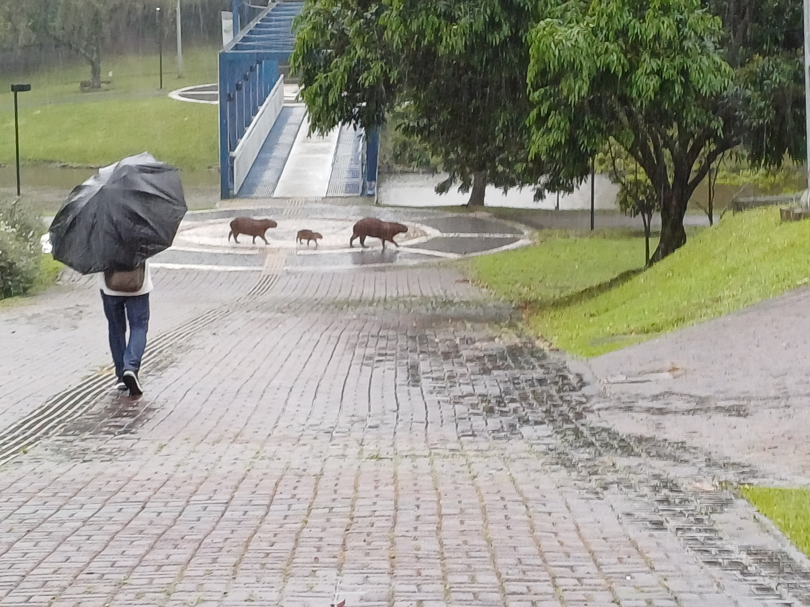
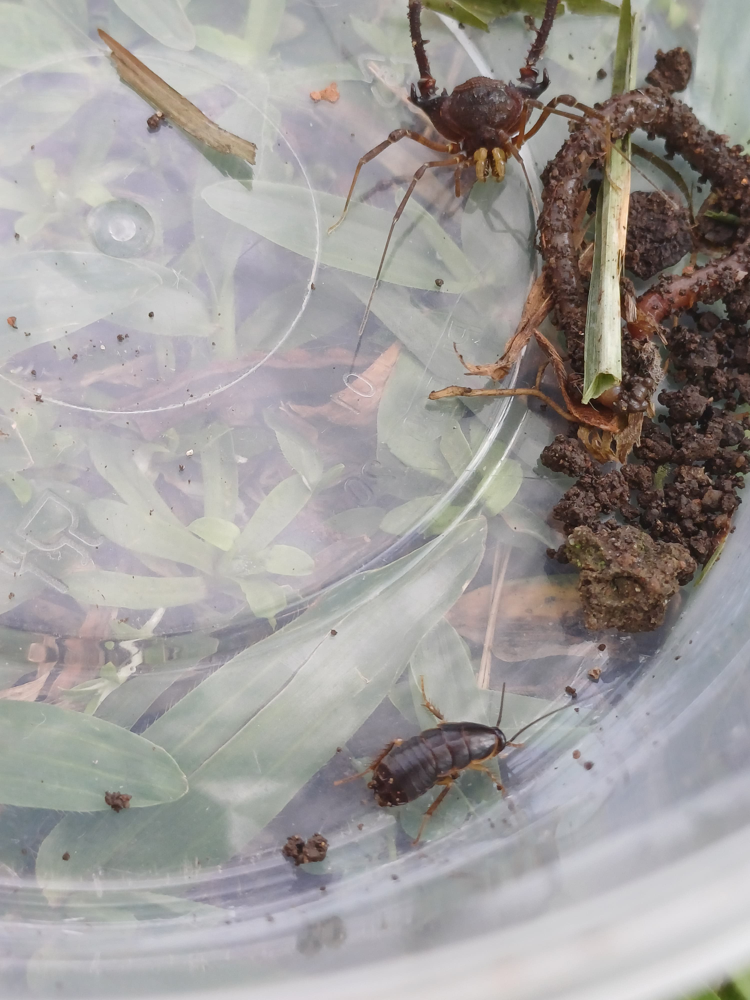
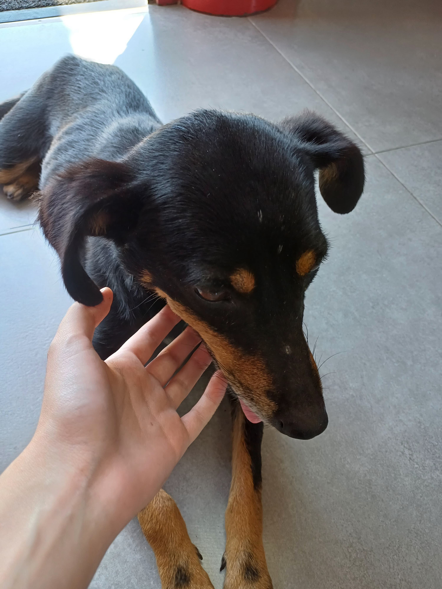
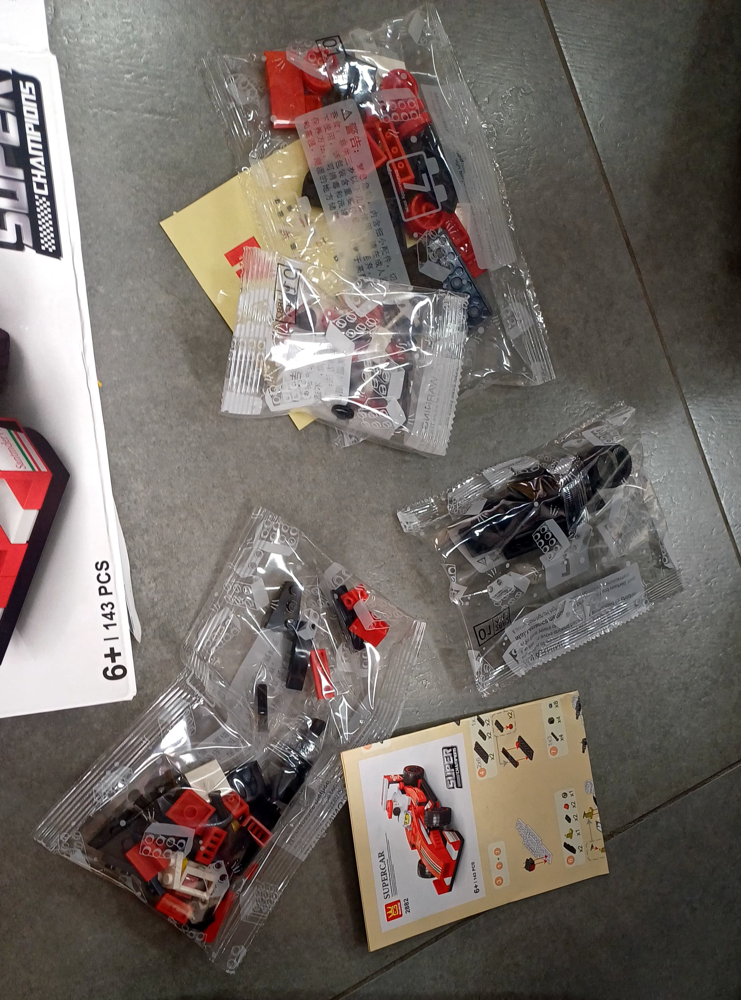
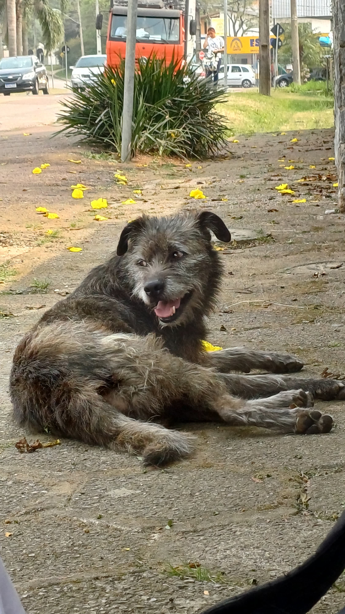
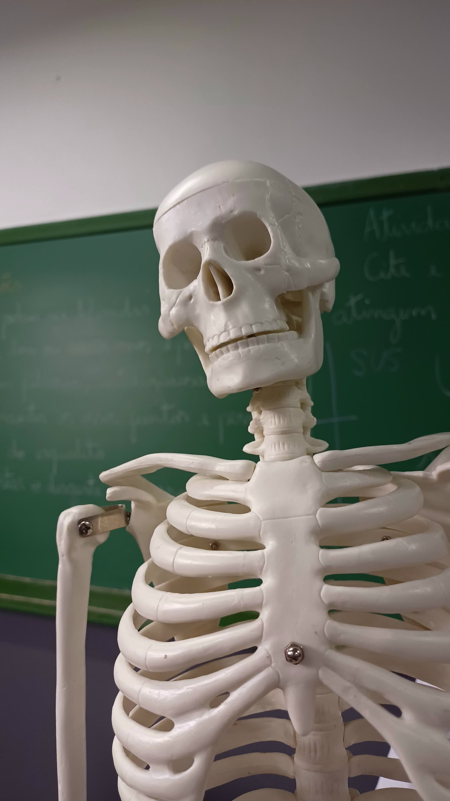

Minhas Memórias do Ensino Fundamental
Quando eu penso no ensino fundamental, parece que foi ontem. Acordar cedo era um sacrifício, mas de alguma forma a gente sempre chegava em cima do horário, com aquele desespero de entrar antes do sinal tocar e a professora ficar brava. A sala de aula tinha aquele cheiro de lápis novo, caderno amassado na mochila, e sempre tinha alguém que esquecia o material, e claro, era aquela correria pra emprestar.
Se o ensino fundamental era diversão e descoberta, o ensino médio já veio com uma carga bem diferente. Logo no primeiro dia, dava pra sentir que a coisa ia ser mais séria. O peso de ser “quase adulto” já batia de cara, com todo mundo falando sobre vestibular, ENEM, carreira... e eu só pensando: calma aí, mal entrei e já estão perguntando o que vou fazer pro resto da vida?
As aulas ficavam mais puxadas, e a pressão psicológica começou a aparecer. Provas quase todo mês, toneladas de matérias, simulados e mais simulados, como se cada teste fosse definir o meu futuro pra sempre. Tinha dias que eu não conseguia parar de pensar nisso "e se eu não conseguir passar? E se eu escolher o curso errado?" O medo de fracassar virava uma sombra constante, e por mais que eu tentasse ignorar, ele sempre estava lá. A gente começava a perceber que o mundo estava esperando algo da gente, e isso era assustador.
Aqui vão algumas memórias que tenho do colégio... Vou começar compartilhando essas duas fotos que tirei na igreja, eu acho a estética dela linda.
Um dia no laboratório, sempre que eu ia gostava de admirar a vista que tinha de lá
O dia em que avistamos uma família de capivaras no passeio que tivemos para a Positivo.
Insetos que alguns colegas meus coletaram para fazer uma pesquisa de biologia...
Cachorrinho que estava no Farol ao lado da escola.
Aqui foi um momento bastante divertido que tive com meus amigos, ficamos montando Lego no farol depois do colégio.
Depois das aulas eu acostumava ficar sentado aqui esperando minha condução chegar, nesse dia eu vi esse cachorrinho pela primeira vez na região, ele me lembrou o cãozinho da Dama e o Vagabundo... e no caso, ele seria o vagabundo 😁
E para fechar as memórias com chave de ouro, fique com o Sr. Esqueleto que foi nos visitar em uma das aulas de Saúde e bem estar...💀
